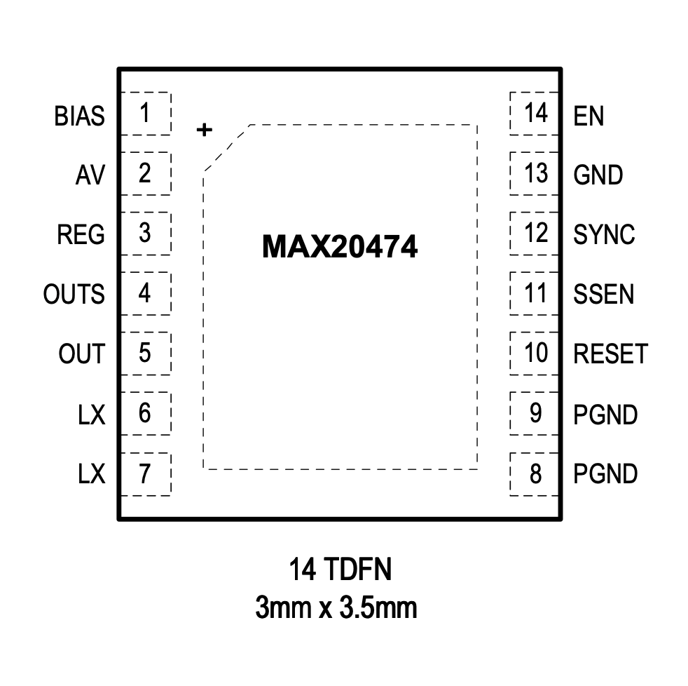

MAX20474

Pin Description
| PIN | NAME | FUNCTION |
|---|---|---|
| 1 | BIAS | BIAS LDO Output. Connect a 2.2μF ceramic capacitor to from BIAS to GND. |
| 2 | AV | Analog Power Input Supply. Connect a 0.1μF ceramic capacitor from AV to GND. |
| 3 | REG | LDO Output. Connect a capacitor from REG to OUT. See REG Pin Considerations for required value. |
| 4 | OUTS | Output Voltage Feedback Pin. Connect this pin to the output capacitor for part numbers with fixed output voltage or through a resistor-divider for the adjustable output version. |
| 5 | OUT | Output Voltage. |
| 6,7 | LX | Inductor Connection. Connect LX to the switched side of the inductor. |
| 8,9 | PGND | Power Ground. |
| 10 | RESET | Open-Drain RESET Output. To obtain a logic signal, pull up RESET with an external resistor. |
| 11 | SSEN | Spread-Spectrum Enable. Connect to input supply to enable spread spectrum or to ground to disable. |
| 12 | SYNC | SYNC Input. Connect SYNC to GND or leave unconnected to enable SKIP-mode operation under light loads. Connect SYNC to AV or an external clock to enable fixed-frequency forced-PWM-mode operation. |
| 13 | GND | Ground. Connect all ground pins to the EP. |
| 14 | EN | Active-High Enable. Drive EN HIGH for normal operation. |
| - | EP | Exposed Pad. Connect the exposed pad to ground. Connecting the exposed pad to ground does not remove the requirement for proper ground connections to PGND. The exposed pad is attached with epoxy to the substrate of the die, making it an excellent path to remove heat from the IC. |